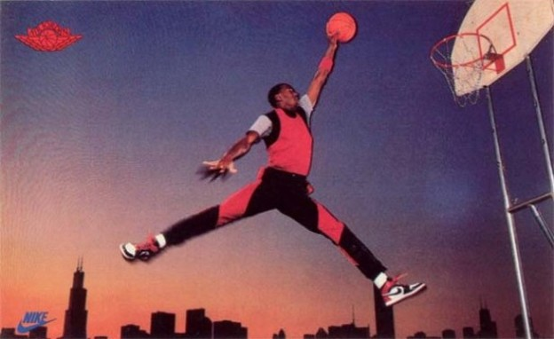
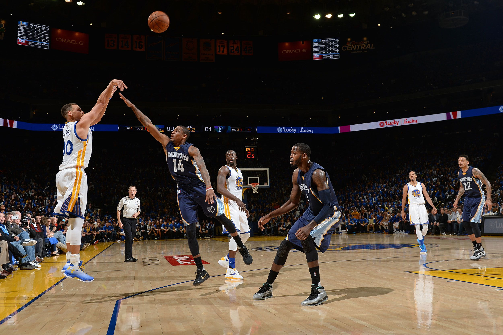

The intense rivalry between Magic Johnson and Larry Bird during the 1980s played a pivotal role in revitalising the NBA. Their battles on the court captivated audiences, increased viewership, and set the stage for the league's resurgence.

Building upon the foundation laid in the 1980s, Michael Jordan's dominance in the 1990s propelled the NBA to unprecedented global popularity. His athletic prowess, combined with savvy marketing, turned him into an international icon and expanded the league's worldwide reach.
In the 2010s, Stephen Curry's exceptional three-point shooting skills revolutionised basketball strategy. His influence shifted the game's focus towards perimeter shooting, leading to a new era where the three-point shot became a central offensive weapon for teams across the league.
